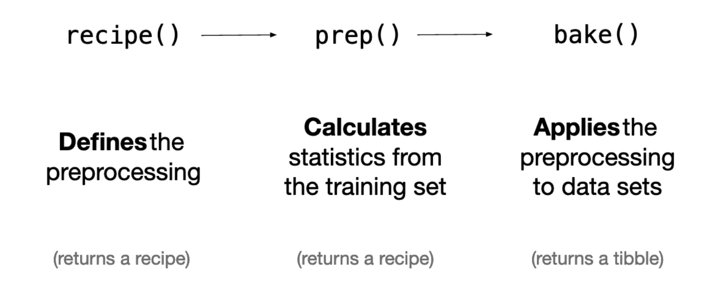

Level 2 classification Tidy Modeling: using Recipe to down sample.
load package
Loading required package: recipes
Loading required package: dplyr
Attaching package: 'dplyr'
The following objects are masked from 'package:stats':
filter, lag
The following objects are masked from 'package:base':
intersect, setdiff, setequal, union
Attaching package: 'recipes'
The following object is masked from 'package:stats':
step
── Attaching core tidyverse packages ──────────────────────── tidyverse 2.0.0 ──
✔ forcats 1.0.0 ✔ readr 2.1.4
✔ ggplot2 3.5.0 ✔ stringr 1.5.1
✔ lubridate 1.9.2 ✔ tibble 3.2.1
✔ purrr 1.0.2 ✔ tidyr 1.3.1
── Conflicts ────────────────────────────────────────── tidyverse_conflicts() ──
✖ dplyr::filter() masks stats::filter()
✖ stringr::fixed() masks recipes::fixed()
✖ dplyr::lag() masks stats::lag()
ℹ Use the conflicted package (<http://conflicted.r-lib.org/>) to force all conflicts to become errors
── Attaching packages ────────────────────────────────────── tidymodels 1.1.0 ──
✔ broom 1.0.5 ✔ rsample 1.2.0
✔ dials 1.2.0 ✔ tune 1.1.2
✔ infer 1.0.4 ✔ workflows 1.1.3
✔ modeldata 1.2.0 ✔ workflowsets 1.0.1
✔ parsnip 1.1.0 ✔ yardstick 1.2.0
── Conflicts ───────────────────────────────────────── tidymodels_conflicts() ──
✖ scales::discard() masks purrr::discard()
✖ dplyr::filter() masks stats::filter()
✖ stringr::fixed() masks recipes::fixed()
✖ dplyr::lag() masks stats::lag()
✖ yardstick::spec() masks readr::spec()
✖ recipes::step() masks stats::step()
• Use suppressPackageStartupMessages() to eliminate package startup messages
library (palmerpenguins) # penguin dataset
Attaching package: 'palmerpenguins'
The following object is masked from 'package:modeldata':
penguins
library (gt) # better tables library (bonsai) # tree-based models library (conflicted) # function conflicts library (vetiver)library (Microsoft365R)library (pins)tidymodels_prefer () # handle conflicts conflict_prefer ("penguins" , "palmerpenguins" )
[conflicted] Will prefer palmerpenguins::penguins over any other package.
options (tidymodels.dark = TRUE ) # dark mode theme_set (theme_bw ()) # set default ggplot2 theme
data preparation
read data
library (tidyverse)<- readr:: read_csv ("https://raw.githubusercontent.com/rfordatascience/tidytuesday/master/data/2020/2020-02-11/hotels.csv" )
Rows: 119390 Columns: 32
── Column specification ────────────────────────────────────────────────────────
Delimiter: ","
chr (13): hotel, arrival_date_month, meal, country, market_segment, distrib...
dbl (18): is_canceled, lead_time, arrival_date_year, arrival_date_week_numb...
date (1): reservation_status_date
ℹ Use `spec()` to retrieve the full column specification for this data.
ℹ Specify the column types or set `show_col_types = FALSE` to quiet this message.
<- hotels %>% filter (is_canceled == 0 ) %>% mutate (children = case_when (+ babies > 0 ~ "children" ,TRUE ~ "none" required_car_parking_spaces = case_when (> 0 ~ "parking" ,TRUE ~ "none" %>% select (- is_canceled, - reservation_status, - babies)
plotting and EDA
%>% count (children)
# A tibble: 2 × 2
children n
<chr> <int>
1 children 6073
2 none 69093
library (skimr)skim (hotel_stays)
Data summary
Name
hotel_stays
Number of rows
75166
Number of columns
29
_______________________
Column type frequency:
character
14
Date
1
numeric
14
________________________
Group variables
None
Variable type: character
hotel
0
1
10
12
0
2
0
arrival_date_month
0
1
3
9
0
12
0
children
0
1
4
8
0
2
0
meal
0
1
2
9
0
5
0
country
0
1
2
4
0
166
0
market_segment
0
1
6
13
0
7
0
distribution_channel
0
1
3
9
0
5
0
reserved_room_type
0
1
1
1
0
9
0
assigned_room_type
0
1
1
1
0
10
0
deposit_type
0
1
10
10
0
3
0
agent
0
1
1
4
0
315
0
company
0
1
1
4
0
332
0
customer_type
0
1
5
15
0
4
0
required_car_parking_spaces
0
1
4
7
0
2
0
Variable type: Date
reservation_status_date
0
1
2015-07-01
2017-09-14
2016-09-01
805
Variable type: numeric
lead_time
0
1
79.98
91.11
0.00
9.0
45.0
124
737
▇▂▁▁▁
arrival_date_year
0
1
2016.15
0.70
2015.00
2016.0
2016.0
2017
2017
▃▁▇▁▆
arrival_date_week_number
0
1
27.08
13.90
1.00
16.0
28.0
38
53
▆▇▇▇▆
arrival_date_day_of_month
0
1
15.84
8.78
1.00
8.0
16.0
23
31
▇▇▇▇▆
stays_in_weekend_nights
0
1
0.93
0.99
0.00
0.0
1.0
2
19
▇▁▁▁▁
stays_in_week_nights
0
1
2.46
1.92
0.00
1.0
2.0
3
50
▇▁▁▁▁
adults
0
1
1.83
0.51
0.00
2.0
2.0
2
4
▁▂▇▁▁
is_repeated_guest
0
1
0.04
0.20
0.00
0.0
0.0
0
1
▇▁▁▁▁
previous_cancellations
0
1
0.02
0.27
0.00
0.0
0.0
0
13
▇▁▁▁▁
previous_bookings_not_canceled
0
1
0.20
1.81
0.00
0.0
0.0
0
72
▇▁▁▁▁
booking_changes
0
1
0.29
0.74
0.00
0.0
0.0
0
21
▇▁▁▁▁
days_in_waiting_list
0
1
1.59
14.78
0.00
0.0
0.0
0
379
▇▁▁▁▁
adr
0
1
99.99
49.21
-6.38
67.5
92.5
125
510
▇▆▁▁▁
total_of_special_requests
0
1
0.71
0.83
0.00
0.0
1.0
1
5
▇▁▁▁▁
%>% mutate (arrival_date_month = factor (arrival_date_month,levels = month.name%>% count (hotel, arrival_date_month, children) %>% group_by (hotel, children) %>% mutate (proportion = n / sum (n)) %>% ggplot (aes (arrival_date_month, proportion, fill = children)) + geom_col (position = "dodge" ) + scale_y_continuous (labels = scales:: percent_format ()) + facet_wrap (~ hotel, nrow = 2 ) + labs (x = NULL ,y = "Proportion of hotel stays" ,fill = NULL
data split
<- hotel_stays %>% select (%>% mutate_if (is.character, factor) %>% rename (target_variable= children)
set.seed (1234 )<- initial_validation_split (data= hotels_df, prop = c (0.7 ,0.2 ))= training (data_split) = testing (data_split) = validation (data_split)
modeling
recipe
becasue the target class is not balance so using downsample
<- recipe (target_variable ~ ., data = data_train) %>% step_downsample (target_variable) %>% step_dummy (all_nominal (), - all_outcomes ()) %>% step_zv (all_numeric ()) %>% step_normalize (all_numeric ()) %>% prep ()

prep the recipe
= data_rec %>% prep ()
── Recipe ──────────────────────────────────────────────────────────────────────
Number of variables by role
Training data contained 8424 data points and no incomplete rows.
• Down-sampling based on: target_variable | Trained
• Dummy variables from: hotel, arrival_date_month, meal, ... | Trained
• Zero variance filter removed: <none> | Trained
• Centering and scaling for: adr and adults, ... | Trained
bake the train data with preded recipe
<- bake (data_rec, new_data = data_train)
<- bake (data_rec, new_data = NULL )
<- juice (data_rec)
the difference between train_proc and train_juice is that the train_juice is been down sample.
%>% count (target_variable)
# A tibble: 2 × 2
target_variable n
<fct> <int>
1 children 4212
2 none 48404
the juice and train_proc2 target is down sample to 1:1
%>% count (target_variable)
# A tibble: 2 × 2
target_variable n
<fct> <int>
1 children 4212
2 none 4212
%>% count (target_variable)
# A tibble: 2 × 2
target_variable n
<fct> <int>
1 children 4212
2 none 4212
bake the test data with preded recipe
<- bake (data_rec, new_data = data_test)
<- bake (data_rec, new_data = data_valid)
juice(pre_recipe,data=NULL) is same as bake(pre_recipe,data=hotel_train) for training data (excepted down sample)
model
tree model
<- decision_tree () %>% set_engine ("rpart" ) %>% set_mode ("classification" )
KNN model
<- nearest_neighbor () %>% set_engine ("kknn" ) %>% set_mode ("classification" )
trainning
<- knn_spec %>% fit (target_variable ~ ., data = train_juice)
parsnip model object
Call:
kknn::train.kknn(formula = target_variable ~ ., data = data, ks = min_rows(5, data, 5))
Type of response variable: nominal
Minimal misclassification: 0.2705366
Best kernel: optimal
Best k: 5
<- tree_spec %>% fit (target_variable ~ ., data = train_juice)
parsnip model object
n= 8424
node), split, n, loss, yval, (yprob)
* denotes terminal node
1) root 8424 4212 children (0.5000000 0.5000000)
2) adr>=0.1315202 3214 782 children (0.7566895 0.2433105) *
3) adr< 0.1315202 5210 1780 none (0.3416507 0.6583493)
6) total_of_special_requests>=0.6486961 1042 456 children (0.5623800 0.4376200) *
7) total_of_special_requests< 0.6486961 4168 1194 none (0.2864683 0.7135317)
14) adults< -2.901336 76 8 children (0.8947368 0.1052632) *
15) adults>=-2.901336 4092 1126 none (0.2751711 0.7248289) *
model result
Evaluate
Make predictions on the testing data
<- predict (tree_fit,test_proc) <- predict (tree_fit,test_proc,type= "prob" )
= cbind (data_test,predictions,predictions_probability)
conf_mat (data_test_result, truth = target_variable,estimate = .pred_class)
Truth
Prediction children none
children 484 1966
none 141 4926
metrics (data_test_result, target_variable, .pred_class)
# A tibble: 2 × 3
.metric .estimator .estimate
<chr> <chr> <dbl>
1 accuracy binary 0.720
2 kap binary 0.210
accuracy (data_test_result, truth = target_variable, estimate = .pred_class)
# A tibble: 1 × 3
.metric .estimator .estimate
<chr> <chr> <dbl>
1 accuracy binary 0.720
sens (data_test_result, truth = target_variable,estimate = .pred_class)
# A tibble: 1 × 3
.metric .estimator .estimate
<chr> <chr> <dbl>
1 sens binary 0.774
spec (data_test_result, truth = target_variable,estimate = .pred_class)
# A tibble: 1 × 3
.metric .estimator .estimate
<chr> <chr> <dbl>
1 spec binary 0.715
<- metric_set (accuracy, sens, spec)all_metrics (data_test_result, truth = target_variable,estimate = .pred_class)
# A tibble: 3 × 3
.metric .estimator .estimate
<chr> <chr> <dbl>
1 accuracy binary 0.720
2 sens binary 0.774
3 spec binary 0.715
conf_mat (data_test_result, truth = target_variable,estimate = .pred_class) %>% summary ()
# A tibble: 13 × 3
.metric .estimator .estimate
<chr> <chr> <dbl>
1 accuracy binary 0.720
2 kap binary 0.210
3 sens binary 0.774
4 spec binary 0.715
5 ppv binary 0.198
6 npv binary 0.972
7 mcc binary 0.288
8 j_index binary 0.489
9 bal_accuracy binary 0.745
10 detection_prevalence binary 0.326
11 precision binary 0.198
12 recall binary 0.774
13 f_meas binary 0.315
roc_auc (data_test_result, truth = target_variable, .pred_children)
# A tibble: 1 × 3
.metric .estimator .estimate
<chr> <chr> <dbl>
1 roc_auc binary 0.763
roc_curve (data_test_result, truth = target_variable, .pred_children) %>% autoplot ()
save model
check model size
library (lobstr)obj_size (tree_fit)
bundle and save model
library (bundle)<- bundle (tree_fit)
saveRDS (model_bundle,'level2_model.RDS' )
make predication
load model and unbundle
= readRDS ('level2_model.RDS' )<- unbundle (model)
= predict (model,valid_proc)head (final_prediction)
# A tibble: 6 × 1
.pred_class
<fct>
1 none
2 none
3 children
4 none
5 none
6 none
= cbind (valid_proc,final_prediction)conf_mat (final_prediction_data, truth = target_variable,estimate = .pred_class)
Truth
Prediction children none
children 916 4013
none 320 9784
accuracy (final_prediction_data, truth = target_variable, estimate = .pred_class)
# A tibble: 1 × 3
.metric .estimator .estimate
<chr> <chr> <dbl>
1 accuracy binary 0.712
850 + 10551 )/ (850 + 3246 + 386 + 10551 )